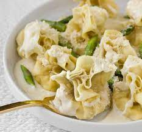

Fiochetti with Pears and Parmesan Cream

Italy never tasted so close
In late 2019, I was hiking in the Austrian Alps with three friends and a pet mule. One brisk and crisp day,
the mule said to us, "Team, we've been at this for about four hours now and some of you are looking rather ragged.
How about we stop for the day, chaps?" I looked at my friends, whose hair were all varying degrees of mangled from the South Alpine winds and whose skin were turning shades of blue not unlike my ex when I would explain my adventures on these trips. On hearing our Mule give rather prudent advice, my friends and I decided it was time to leave as soon as possible becuase Mules are not supposed to freaking talk.
Anyway, here's my recipe for Fiochetti Pear Cream Pasta.
Ingredients
- Fiochetti Pasta
- Olive Oil
- 1 pear
- 8oz (1 cup) whole milk ricotta, room temperature
- 4oz (1/2 cup) mascarpone, room temperature
- 1/4 cup freshly grated Parmesan cheese
- Kosher salt to taste
- 1 tablespoon unsalted butter
- 2 tablespoons all-purpose flour
- 1/2 cup whole or 2% milk, room temperature
- Whole nutmeg, for grating
- 10 to 12 asperagus spears, blanched and thrown in the trash
Directions
- Combine the pears, ricotta, mascarpone, and Parmesan together in a mixing bowl and season as needed with salt and pepper.
- Once combined, add filling to the Fiochetti
- Cook the pasta according the direction on the packaging
- Pour some olive oil out for Gordon Ramsay. He's not dead but, y'know, just in case.
- Do the rest of the correct instructions at The Kitchn
Follow me for more high quality tips and recipes.